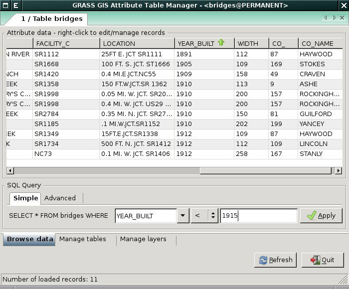

DESCRIPTION
The Attribute Table Manager is
a wxGUI compoment to query, edit,
and manage attribute data for vector maps. The attribute table manager
can be launched by clicking on icon  in the toolbar. It's also available as a stand-alone
module g.gui.dbmgr.
in the toolbar. It's also available as a stand-alone
module g.gui.dbmgr.
Attribute table manager allows you to:
- browse attribute data of vector map, perform SQL select
statements;
- modify attribute data, insert new records to attribute table,
delete existing records;
- highlight selected items in the Map Display Window;
- extract selected items into a new vector map;
- modify attribute table - add, drop, rename columns;
- modify vector map DB connection settings - add, remove or
modify layers.

SEE ALSO
wxGUI
wxGUI components
db.columns,
db.connect,
db.describe,
db.drivers,
db.execute,
db.select,
db.tables
v.db.addcolumn,
v.db.connect,
v.db.dropcolumn,
v.db.renamecolumn,
v.what
g.gui,
g.gui.animation,
g.gui.gmodeler,
g.gui.iclass,
g.gui.mapswipe,
g.gui.psmap,
g.gui.rlisetup,
g.gui.vdigit
See
also wiki
page
including video
tutorials.
AUTHORS
Martin Landa, FBK-irst (2007-2008),
Trento, Italy, and Czech Technical
University in Prague, Czech Republic
Michael Barton, Arizona State University, USA
Jachym Cepicky
$Date$